library("QFeatures")
library("dplyr")
library("tidyr")
library("ggplot2")
library("msqrob2")
library("stringr")
library("ExploreModelMatrix")
library("MsCoreUtils")
library("matrixStats")
library("patchwork")
library("kableExtra")
library("ComplexHeatmap")
library("purrr")
library("tibble")
library("scater")Workflow optimisation using a Data Independent Acquisition spike-in study searched with DIA-NN
Lieven Clement ![]()
Adapted from chapter “Optimisation of a data analysis workflow” in msqrob2book (https://statomics.github.io/msqrob2book/) by Christophe Vanderaa, Stijn Vandenbulcke and Lieven Clement.
DIA-NN provides multiple quantifications, e.g. derived from the MS1 or MS2 spectra, and at precursor or protein (protein group) level. The term ‘precursor’ refers to a charged peptide species and is the basic unit of identification and quantification in DIA. Hence, in the context of DIA we refer to a precursor table, instead of to a PSM table in DDA.
Examples of different quantities are:
- raw MS1 area: Ms1.Area, normalised MS1 Area: Ms1.Normalised, MS2 Precursor quantities: Precursor.Quantity, Normalised MS2 Precursor quantities: Precursor.Normalised, etc., which are all at the precursor level
- MS2 based summary at the protein (protein group)-level: PG.MaxLFQ
Here, we will use the Precursor.Quantity, Precursor.Normalised and PG.MaxLFQ column.
1 Experimental context
The DIA case-study is a subset of Staes et al. (Staes et al. 2024). They spiked digested UPS proteins in yeast at the following ratio’s (yeast:ups ratio 10:1, 10:2, 10:4, 10:8, 10:10) in a yeast digest background.
Each sample was analyzed in triplicate using an Ultimate 3000 RSLC ProFlow nano-LC system in-line connected to a Q Exactive HF BioPharma mass spectrometer (Thermo).
Here, we will only use the data of the samples from the middle 3 spike-in ratio’s (2,4 and 8) that were searched using DIA-NN 2.2.0. The main search output for this DIA-NN version is stored in the report.parquet file in the DIA-NN output directory.
2 Load packages
We load the msqrob2 package, along with additional packages for data manipulation and visualisation.
Click to see code
3 Data
Click to see code
3.1 Precursor table
We load the output from DIA-NN parquet file.
library("BiocFileCache")
bfc <- BiocFileCache()
precursorFile <- bfcrpath(bfc,"https://github.com/statOmics/msqrob2data/raw/refs/heads/main/dia/spikeinStaes/spikein248-staesetal2024.parquet") We can import the report.parquet file using the read_parquet function from the arrow package. Note, that older versions of DIA-NN store the output as report.tsv.
precursors <- arrow::read_parquet(precursorFile) # function from the arrow package
#precursors <- data.table::fread(precursorFile) # For older versions of DIA-NN, where the results are stored as tsv files. Note that the precursorFile then would point to "report.tsv" We filter the data to reduce the memory footprint.
precursors <- precursors |>
select(
Run,
Precursor.Id,
Modified.Sequence,
Stripped.Sequence,
Precursor.Charge,
Protein.Group,
Protein.Names,
Protein.Ids,
Genes,
Precursor.Quantity,
Precursor.Normalised,
Normalisation.Factor,
Ms1.Area,
Ms1.Normalised,
PG.MaxLFQ,
Q.Value,
Lib.Q.Value,
PG.Q.Value,
Lib.PG.Q.Value,
Proteotypic,
Decoy, # Not available in older versions of DIA-NN
RT)We known the ground truth: UPS proteins are differentially abundant (DA, spiked in), Yeast proteins are not.
precursors <- precursors |>
mutate(species = grepl(pattern = "UPS",Protein.Group) |>
as.factor() |>
recode("TRUE"="ups","FALSE" = "yeast"))
precursors |>
pull(species) |>
table()
yeast ups
301195 4481 3.2 Sample annotation table
The sample annotation table) is not available and can be generated from the run labels, as the researchers included information on the design in the filenames.
We will make a new data frame with the annotation.
We first generate variable
runCol, that gives an overview of the different runs in the experiment, i.e. the unique names in the column Run of the report file. This is a mandatory column in the annotation file that is required by thereadQFeaturesfunction that will be used to generate a QFeatures object with the quant data.Next we generate variable
sampleId, to pinpoint the different samples in the dataset. This can be extracted from the run names as the researchers have stored information on the meta data in the file names for each run. E.g. for run B000282_Ap_6883_EXT-765_DIA_Yeast_UPS2_ratio04_DIA_2 this is the ratio, i.e. ratio04, and the replicate, i.e. _2 after DIA. Note, that the first replicate has no number.- We first replace the redundant pattern “DIA” with an empty character string.
- Next we split the strings according to the pattern “UPS2” using the
strsplitfunction and - keep the right part of the string. We do this by looping over the list from
strplitwith an sapply loop, which takes the output of b. as its first argument, uses the function ‘[’ to subset vector of strings in each list element and uses an optional argument ‘2’ to select the second string of the vector (right part).
We make add the variable
ratioby parsing the variable stringId and- replacing pattern “ratio” by an empty string using the
gsubfunction - splitting the output of
gsubaccording to pattern “_” and - keeping the left part of the string (first element of the vector of strings in each list item of the substr output)
- converting the output of c to an integer
- converting the ratio into a factor
- replacing pattern “ratio” by an empty string using the
We make add the variable
repby parsing the variable stringId, and- splitting it according to pattern “_“,
- keeping the right part of the string (second element of the vector of strings in each list item of the substr output)
- replacing NA by 1, as for the first replicate no number was added to the filename
- converting it into a factor
annot <- data.frame(runCol = precursors |>
pull(Run) |>
unique() # 1.
) |>
mutate(sampleId = gsub(x = runCol, pattern = "_DIA", replacement = "") |> #2.a
str_split("UPS2_") |> #2.b
sapply(`[`, 2) #2.c
) |>
mutate(
condition = gsub("ratio", "", sampleId) |> #3.a
str_split("_") |> #3.b
sapply(`[`, 1) |> #3.c
as.numeric() |> #3.d
as.factor(), #3.e
rep = sampleId |>
str_split("_") |> #4.a
sapply(`[`, 2) |> #4.b
replace_na(replace = "1") |> #4.c
as.factor(), #4.d
ratio = condition |>
as.character() |>
as.double()
)3.3 Convert to QFeatures
First, recall that the precursor table is file in long format. Every quantitative column in the precursor table contains information for multiple runs. Therefore, the function split the table based on the run identifier, given by the runCol argument (for DIA-NN, that identifier is contained in run). So, the QFeatures object after import will contain as many sets as there are runs. Next, the function links the annotation table with the PSM data. To achieve this, the annotation table must contain a runCol column that provides the run identifier in which each sample has been acquired, and this information will be used to match the identifiers in the Run column of the precursor table.
Here, we will use the Precursor.Quantity column as quantification input.
Note, that the
(qf <- readQFeatures(assayData = precursors,
colData = annot,
quantCols = "Precursor.Quantity",
runCol = "Run",
fnames = "Precursor.Id"))An instance of class QFeatures (type: bulk) with 9 sets:
[1] B000254_Ap_6883_EXT-765_DIA_Yeast_UPS2_ratio02_DIA: SummarizedExperiment with 34471 rows and 1 columns
[2] B000258_Ap_6883_EXT-765_DIA_Yeast_UPS2_ratio04_DIA: SummarizedExperiment with 35142 rows and 1 columns
[3] B000262_Ap_6883_EXT-765_DIA_Yeast_UPS2_ratio08_DIA: SummarizedExperiment with 34028 rows and 1 columns
...
[7] B000302_Ap_6883_EXT-765_DIA_Yeast_UPS2_ratio02_DIA_3: SummarizedExperiment with 33091 rows and 1 columns
[8] B000306_Ap_6883_EXT-765_DIA_Yeast_UPS2_ratio04_DIA_3: SummarizedExperiment with 34472 rows and 1 columns
[9] B000310_Ap_6883_EXT-765_DIA_Yeast_UPS2_ratio08_DIA_3: SummarizedExperiment with 33724 rows and 1 columns 4 Data preprocessing
The data preprocessing workflow for DIA data is similar to the workflow for DDA-LFQ data, but there are suble differences as we start from precursor level data and have additional columns.
4.1 Encoding missing values
We replace any zero in the quantitative data with an NA, which is needed for downstream log2 transformation.
qf <- zeroIsNA(qf, names(qf))4.2 Precursor Filtering
Filtering removes low-quality and unreliable precursors that would otherwise introduce noise and artefacts in the data.
Click to see code
4.2.1 Remove questionable identifications
Click to see code
We apply standard filtering advised by DIA-NN:
q-value threshold of 0.01 for the identification of precursors (
Q.Value) and protein groups (PG.Q.Value). If the file is processed via matching between runs, it is also useful to filter on Lib.Q.Value and Lib.PG.Q.Value.Remove precursors that could not be mapped, i.e. when
Precursor.Idcolumn is an empty string.Filter decoys, i.e. only keep precursors for which the
Decoycolumn equals 0. (Note, that theDecoycolumn is not present in the output of older versions of DIA-NN)Keeping only proteotypic peptides, which map uniquely to a specific protein.
qf <- qf |>
filterFeatures(~ Q.Value <= 0.01 & #1.
PG.Q.Value <= 0.01 & #1.
Lib.Q.Value <= 0.01 & #1.
Lib.PG.Q.Value <= 0.01 & #1.
Precursor.Id != "" & #2.
Decoy == 0 & #3. (Note, that this filter is not available with previous versions of DIA-NN, as the report.tsv file did not include a Decoy column. So other strategies are needed if Decoys are in the output file.)
Proteotypic == 1) #4.4.2.2 Assay joining
Up to now, the data from different runs were kept in separate assays. We can now join the sets into a precursor set using joinAssays(). Sets are joined by stacking the columns (samples) in a matrix and rows (features) are matched according to a row identifier, here the Precursor.Id. We will store the result in the assay with name: precursors.
(qf <- joinAssays(
x = qf,
i = names(qf),
fcol = "Precursor.Id",
name = "precursors"
))An instance of class QFeatures (type: bulk) with 10 sets:
[1] B000254_Ap_6883_EXT-765_DIA_Yeast_UPS2_ratio02_DIA: SummarizedExperiment with 32848 rows and 1 columns
[2] B000258_Ap_6883_EXT-765_DIA_Yeast_UPS2_ratio04_DIA: SummarizedExperiment with 33491 rows and 1 columns
[3] B000262_Ap_6883_EXT-765_DIA_Yeast_UPS2_ratio08_DIA: SummarizedExperiment with 32406 rows and 1 columns
...
[8] B000306_Ap_6883_EXT-765_DIA_Yeast_UPS2_ratio04_DIA_3: SummarizedExperiment with 32829 rows and 1 columns
[9] B000310_Ap_6883_EXT-765_DIA_Yeast_UPS2_ratio08_DIA_3: SummarizedExperiment with 32128 rows and 1 columns
[10] precursors: SummarizedExperiment with 38615 rows and 9 columns 4.2.3 Filtering: Remove highly missing precursors
We keep peptides that were observed at last 4 times out of the \(n = 9\) samples, so that we can estimate the peptide characteristics. We tolerate the following proportion of NAs: \(\text{pNA} = \frac{(n - 4)}{n} = 0.556\), so we keep peptides that are observed in at least 44.4% of the samples, which corresponds to one treatment condition. This is an arbitrary value that may need to be adjusted depending on the experiment and the data set.
nObs <- 4
n <- ncol(qf[["precursors"]])
(qf <- filterNA(qf, i = "precursors", pNA = (n - nObs) / n))An instance of class QFeatures (type: bulk) with 10 sets:
[1] B000254_Ap_6883_EXT-765_DIA_Yeast_UPS2_ratio02_DIA: SummarizedExperiment with 32848 rows and 1 columns
[2] B000258_Ap_6883_EXT-765_DIA_Yeast_UPS2_ratio04_DIA: SummarizedExperiment with 33491 rows and 1 columns
[3] B000262_Ap_6883_EXT-765_DIA_Yeast_UPS2_ratio08_DIA: SummarizedExperiment with 32406 rows and 1 columns
...
[8] B000306_Ap_6883_EXT-765_DIA_Yeast_UPS2_ratio04_DIA_3: SummarizedExperiment with 32829 rows and 1 columns
[9] B000310_Ap_6883_EXT-765_DIA_Yeast_UPS2_ratio08_DIA_3: SummarizedExperiment with 32128 rows and 1 columns
[10] precursors: SummarizedExperiment with 34796 rows and 9 columns 4.2.4 Filter one-hit wonders
Here, we remove proteins that can only be found by one peptide, as such proteins may not be trustworthy.
We first calculate how many distinct peptides map to each protein (
Protein.Group). We use the stripped precursor sequence, i.e. sequence of the base peptide for this purpose.We store this information in the row data of the precursors assay
We filter precursors of one-hit wonder proteins.
# Filter for peptides per protein
pepsPerProtDf <- qf[["precursors"]] |>
rowData() |>
data.frame() |>
dplyr::select("Stripped.Sequence", "Protein.Group") |>
group_by(Protein.Group) |>
mutate(pepsPerProt = Stripped.Sequence |>
unique() |> length()
) #1.
rowData(qf[["precursors"]])$pepsPerProt <- pepsPerProtDf$pepsPerProt #2.
qf <- filterFeatures(qf,
~ pepsPerProt > 1,
keep = TRUE) #3.4.3 Log-transformation
We perform log2-transformation with logTransform() from the QFeatures package. We use base = 2 and store the result in a new summarized experiment named precursors_log
Click to see code
qf <- logTransform(qf,
base = 2,
i = "precursors",
name = "precursors_log")4.4 Normalisation
Click to see code
pNeed1 <- qf[, , "precursors_log"] |> #1.
longForm(colvars = colnames(colData(qf))) |> #2.
data.frame() |>
filter(!is.na(value)) |>
ggplot() + #3.
aes(x = value,
colour = condition,
group = colname) +
geom_density() +
theme_minimal()pNeed2 <- qf[, , "precursors_log"] |> #1.
longForm(colvars = colnames(colData(qf)), rowvars = "species") |> #2.
data.frame() |>
filter(!is.na(value)) |>
ggplot() + #3.
aes(x = value,
colour = condition,
group = colname) +
geom_density() +
theme_minimal() +
facet_wrap(~species)pNeed1
pNeed2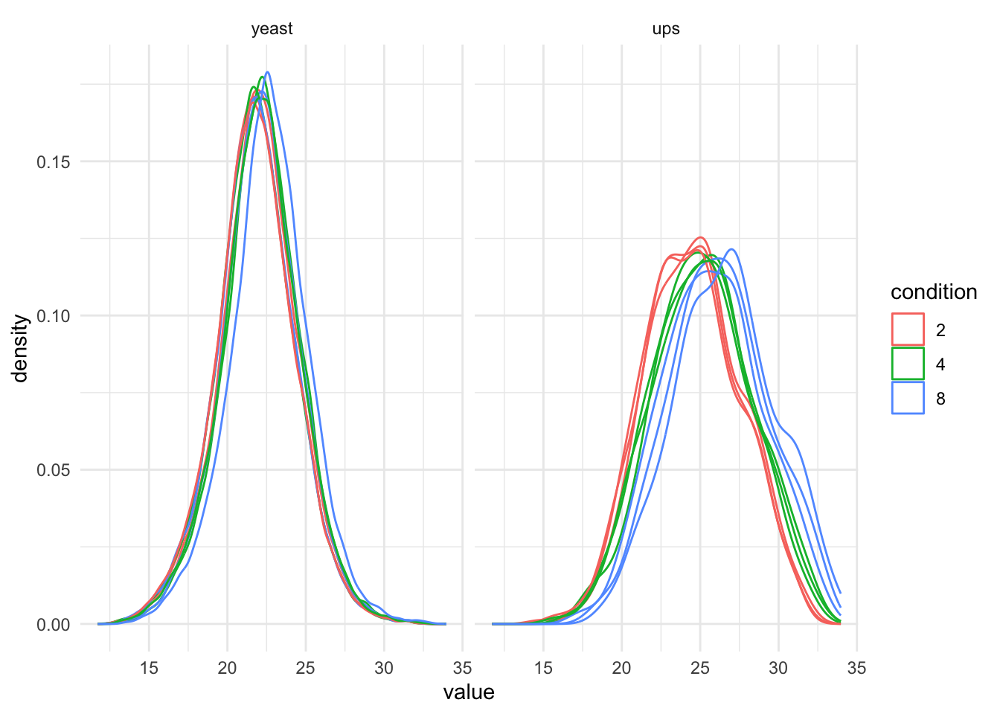
It is clear that we will have to normalise the data.
- no normalisation, STATS = 0 (we do not change the intensities)
- median normalisation,
- total loading normalisation, and
- median of ratio normalisation
- normalisation using internal normfactors in DIA-NN
Defining normalisation factor for total loading normalisation first.
Click to see code
nf_log_tot <- function(qf, i, base = 2, na.rm = TRUE){
log_val <- assay(qf,i) #1.
tot_log_loading <- base^log_val |> #2.a
colSums(na.rm = na.rm) |> #2.b
log(base = base) #2.c
nf_log <- tot_log_loading - median(tot_log_loading) #3.
return(nf_log)
}qf <- sweep( #4. Subtract log2 norm factor column-by-column (MARGIN = 2)
qf,
MARGIN = 2,
STATS = 0, #1.
i = "precursors_log",
name = "precursors_norm_no"
) #1.
qf <- sweep( #4. Subtract log2 norm factor column-by-column (MARGIN = 2)
qf,
MARGIN = 2,
STATS = nfLogMedian(qf, i="precursors_log"), #1.
i = "precursors_log",
name = "precursors_norm_med"
) #2.
qf <- sweep( #4. Subtract log2 norm factor column-by-column (MARGIN = 2)
qf,
MARGIN = 2,
STATS = nf_log_tot(qf, i="precursors_log"), #2.
i = "precursors_log",
name = "precursors_norm_tot"
) #3.
qf <- sweep( #4. Subtract log2 norm factor column-by-column (MARGIN = 2)
qf,
MARGIN = 2,
STATS = nfLogMedianOfRatios(qf, i="precursors_log"), #3.
i = "precursors_log",
name = "precursors_norm_mr"
) #4. DIA-NN and spectronaut also calculates normalisation factors internally, they are calculated on the original scale.
By default they use a global normalisation (sample-level) and additional retention time normalisation. The assumption is that the complexity across samples at a particular retention time is similar. This often holds. However, this assumption is typically violated for single cells, i.e. due to large differences in the proteome e.g. according to cell types and/or cell size.
They can be extracted using the get_searchengine_nf function, which has arguments qf for qfeatures object, i for summarized experiment name or number, nf_name for the variable name with the normalisation factors which is Normalisation.Factor for DIA-NN output and EG_NormalizationFactor for Spectronaut.
Note that a matrix of (log-transformed) normalisation factors is returned that has an equal size as the assay data. Therefore we can sweep these out by using the row and column dimensions, MARGINS = 1:2
Note, however, that it is more straightforward for users who prefer to use the internal normalisation method to start their data analysis from the pre-normalised data, i.e. use the Precursor.Normalised in DIA-NN in the readQFeatures function or the msqrob2gui APPs. They can then simply skip the normalisation step, while keep all other data processing steps as before.
We first define a function to extract the normalisation factors
Click to see code
nfLogSearchEngine <- function(qf, i, nf_name, log = TRUE, base = 2)
{
#nf_name = "Normalisation.Factor" for DIA-NN and "EG_NormalizationFactor" for spectronaut
out <- sapply(colnames(qf[[i]]), function(ii, qf, ids, nf_name) rowData(qf[[ii]])[ids,nf_name], qf = qf, ids = rownames(qf[[i]]), nf_name = nf_name)
if (log) out <- -log(out, base = base)
rownames(out) <- rownames(qf[[i]])
return(out)
}qf <- sweep( #4. Subtract log2 norm factor matrix diann (MARGIN = 1:2)
qf,
MARGIN = 1:2,
STATS = nfLogSearchEngine(qf, i="precursors_log", nf_name = "Normalisation.Factor"), #3.
i = "precursors_log",
name = "precursors_norm_diann"
)We illustrate that the Normalisation.Factor can be used to go from Precursor.Quantity to Precursor.Normalised
Click to see code
pPrecNorm1 <- precursors |>
ggplot(aes(x=Precursor.Quantity, y = Precursor.Normalised)) +
geom_point() +
theme_minimal()pPrecNorm2 <-precursors |>
ggplot(aes(x=Precursor.Quantity * Normalisation.Factor, y = Precursor.Normalised)) +
geom_point() +
theme_minimal()pPrecNorm1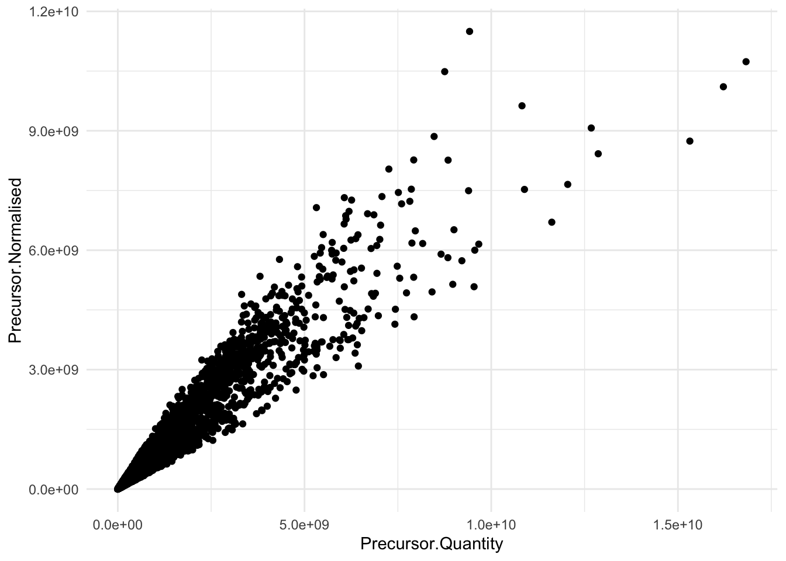
pPrecNorm2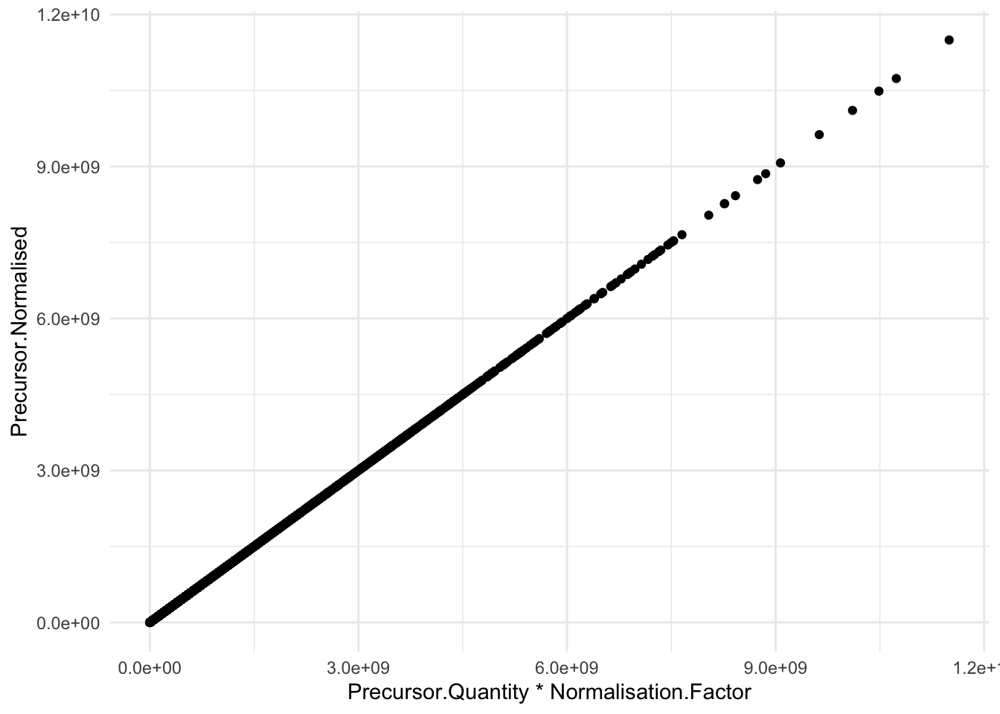
Note, that the normalisation factor is different for each entry. The variable Normalisation.Factor is the scaling factor for both global and retention time normalisation.
Click to see code
pPrecNorm3 <- precursors |>
arrange(RT) |>
ggplot(aes(x = RT, y = -log2(Normalisation.Factor))) +
geom_line() +
facet_wrap(~ Run) +
theme_minimal()pPrecNorm3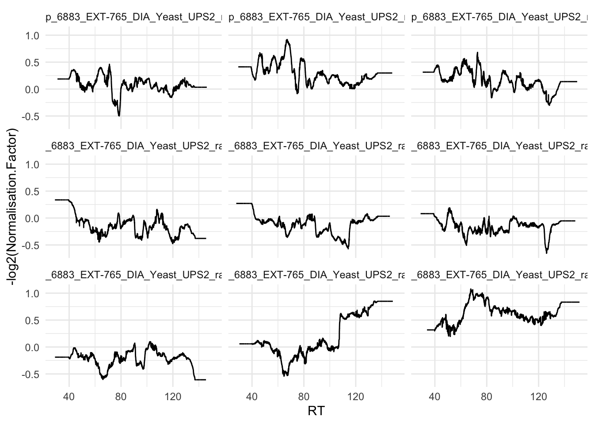
Next, we explore the effect of all normalisation methods in the subsequent plot.
Click to see code
precursors_norm_sets <- grep("precursors_norm", names(qf), value = TRUE)
pNormComp <- qf[, , precursors_norm_sets] |>
longForm(colvars = colnames(colData(qf))) |>
data.frame() |>
mutate(assay = gsub(assay, pattern = "precursors_norm_", replacement = "")) |>
filter(!is.na(value)) |>
ggplot() +
aes(x = value,
colour = condition,
group = colname) +
geom_density() +
labs(subtitle = "Normalised log2 precursor intensities") +
facet_wrap(~assay) +
theme_minimal()pNormComp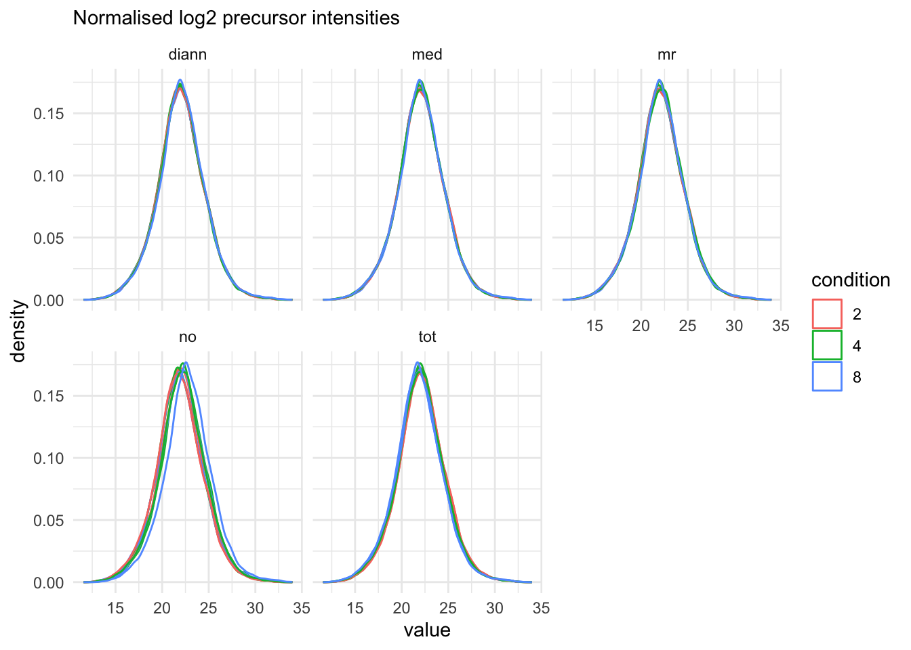
4.5 Summarisation
Here, we will evaluate three popular summarisation methods.
maxLFQ
median polish
median summarisation
maxLFQ summarise the precursor-level data into protein intensities using maxLFQ. maxLFQ first calculates all pairwise log ratio’s between samples only using their shared precursors. Particularly, it uses the median of the log ratio’s between the shared precursors, i.e. \[r_{ij} = median(y_{sj}-y_{si})\].
Hence, it first eliminates peptide effects. It then estimates the summaries by solving
\[
\sum_i\sum_j(y^{prot}_j - y^{prot}_i - r_ij)^2
\] It is implemented in the maxLFQ function of the iq package.
Click to see code
for (normassay in precursors_norm_sets)
{
qf <- aggregateFeatures(
qf, i = normassay,
name = paste0("proteins",gsub(normassay, pattern = "precursors_norm", replacement=""),"_maxLFQ"),
fcol = "Protein.Group",
fun = function(X) iq::maxLFQ(X)$estimate
)
}- median polish is a simple and robust procedure proposed by the statistician John Tukey to fit an additive model for data in a two-way layout table (usually, results from a factorial experiment) of the form row effect + column effect + overall median. Median polish utilizes the medians obtained from the rows and the columns of a two-way table to iteratively calculate the row effect and column effect on the data. The results are robust to outliers, as the iterative procedure uses the medians rather than the means. Here, the row effects are the feature effects and the column effects are the sample/run effects. Particularly, following model is considered:
\[ y_{ip} = \beta_p^\text{pre} + \beta_i^\text{samp} + \epsilon_{ip} \]
where \(y_{ip}\) is the log-normalised precursor intensity for precursor \(p\) belonging to protein \(P\) in sample \(i\). \(\beta_p^\text{pep}\) is the average effect of precursor \(p\), which account for the fact that different precursor yield different baseline intensities (see issue 2. above). \(\beta_i^\text{samp}\) is the average effect of sample \(i\). In other words, it provides the estimated log2-transformed and normalised intensity of protein \(P\) in sample \(i\) corrected for the precursor effect, which will be used as the summarised protein value. \(\epsilon_{ip}\) is the residual effect that cannot be explained by the average sample and precursor effects.
Click to see code
for (normassay in precursors_norm_sets)
{
qf <- aggregateFeatures(
qf, i = normassay,
name = paste0("proteins",gsub(normassay, pattern = "precursors_norm", replacement=""),"_medpol"),
fcol = "Protein.Group",
fun = MsCoreUtils::medianPolish,
na.rm = TRUE
)
}- We finally adopt simple median summarisation
Click to see code
for (normassay in precursors_norm_sets)
{
qf <- aggregateFeatures(
qf, i = normassay,
name = paste0("proteins",gsub(normassay, pattern = "precursors_norm", replacement=""),"_median"),
fcol = "Protein.Group",
fun = matrixStats::colMedians,
na.rm = TRUE
)
}proteins_sets <- grep("proteins", names(qf), value = TRUE)
pSumComp1 <- qf[, , proteins_sets] |>
longForm(colvars = colnames(colData(qf))) |>
data.frame() |>
mutate(assay = gsub(assay, pattern = "proteins_", replacement = ""),
norm = strsplit(assay, split = "_") |>
sapply(`[`, 1),
sum = strsplit(assay, split = "_") |>
sapply(`[`, 2)) |>
filter(!is.na(value)) |>
ggplot() +
aes(x = value,
colour = condition,
group = colname) +
geom_density() +
theme_minimal() +
facet_grid(norm~sum) +
labs(subtitle = "Normalised log2 protein intensities")proteins_sets <- grep("proteins", names(qf), value = TRUE)
pSumComp2 <-qf[, , proteins_sets] |>
longForm(colvars = colnames(colData(qf)), rowvars = "species") |>
data.frame() |>
filter(species =="yeast")|>
mutate(assay = gsub(assay, pattern = "proteins_", replacement = ""),
norm = strsplit(assay, split = "_") |>
sapply(`[`, 1),
sum = strsplit(assay, split = "_") |>
sapply(`[`, 2)) |>
filter(!is.na(value)) |>
ggplot() +
aes(x = value,
colour = condition,
group = colname) +
geom_density() +
theme_minimal() +
facet_grid(norm~sum) +
labs(subtitle = "Normalised log2 protein intensities")pSumComp1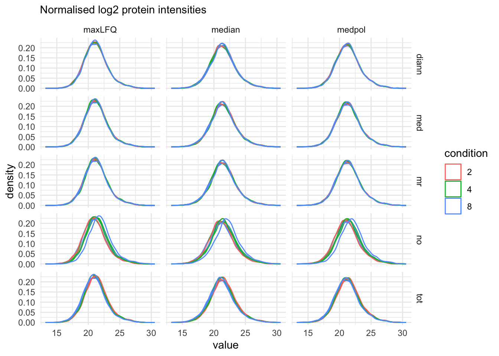
pSumComp2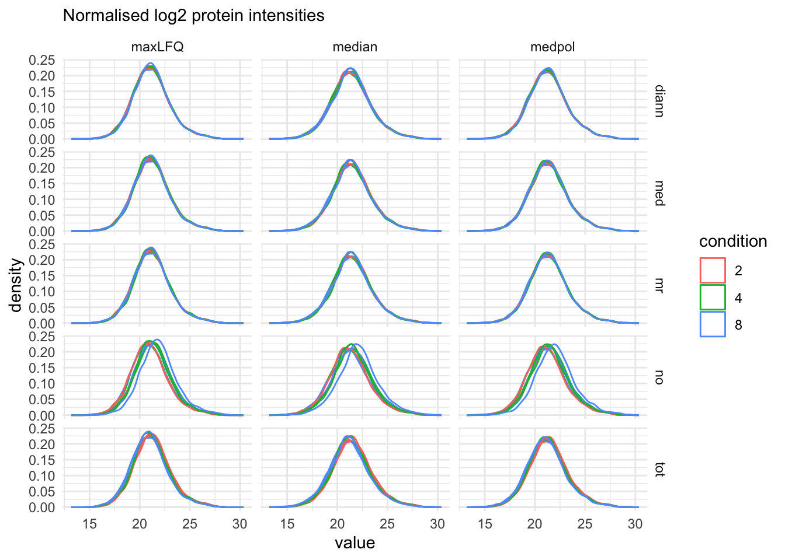
The data processing is complete.
plot(qf)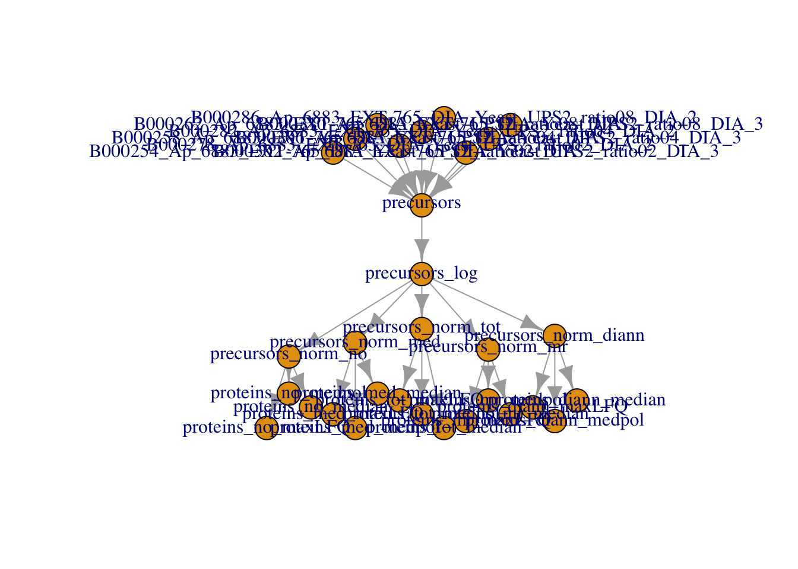
5 DIA-NN protein groups
We will now make a QFeatures object starting from the protein level summaries from DIA-NN. Normally we would start from the protein groups file that is provided by DIA-NN, i.e. the pg_matrix.tsv.
Click to see code
proteinGroupFile <- bfcrpath(bfc,"https://github.com/statOmics/msqrob2data/raw/refs/heads/main/dia/spikeinStaes/spikein248-staesetal2024.pg_matrix.tsv")
proteins <- data.table::fread(proteinGroupFile)We add species information. Possible for this specific dataset, which is a benchmark dataset with lysate from human UPS proteins and Yeast proteins.
proteins <- proteins |>
mutate(species = grepl(pattern = "UPS",Protein.Group) |>
as.factor() |>
recode("TRUE"="ups","FALSE" = "yeast"))
proteins |>
pull(species) |>
table()
yeast ups
3663 31 The protein group table is a file in wide format. The columns with the raw file names contain the maxLFQ protein group intensities for the different samples.
quantCols <- grep(".raw",names(proteins))
names(proteins)[quantCols][1] "S:\\Proteomics_Restored\\6883\\DIA\\raw\\B000254_Ap_6883_EXT-765_DIA_Yeast_UPS2_ratio02_DIA.raw"
[2] "S:\\Proteomics_Restored\\6883\\DIA\\raw\\B000258_Ap_6883_EXT-765_DIA_Yeast_UPS2_ratio04_DIA.raw"
[3] "S:\\Proteomics_Restored\\6883\\DIA\\raw\\B000262_Ap_6883_EXT-765_DIA_Yeast_UPS2_ratio08_DIA.raw"
[4] "S:\\Proteomics_Restored\\6883\\DIA\\raw\\B000278_Ap_6883_EXT-765_DIA_Yeast_UPS2_ratio02_DIA_2.raw"
[5] "S:\\Proteomics_Restored\\6883\\DIA\\raw\\B000282_Ap_6883_EXT-765_DIA_Yeast_UPS2_ratio04_DIA_2.raw"
[6] "S:\\Proteomics_Restored\\6883\\DIA\\raw\\B000286_Ap_6883_EXT-765_DIA_Yeast_UPS2_ratio08_DIA_2.raw"
[7] "S:\\Proteomics_Restored\\6883\\DIA\\raw\\B000302_Ap_6883_EXT-765_DIA_Yeast_UPS2_ratio02_DIA_3.raw"
[8] "S:\\Proteomics_Restored\\6883\\DIA\\raw\\B000306_Ap_6883_EXT-765_DIA_Yeast_UPS2_ratio04_DIA_3.raw"
[9] "S:\\Proteomics_Restored\\6883\\DIA\\raw\\B000310_Ap_6883_EXT-765_DIA_Yeast_UPS2_ratio08_DIA_3.raw"We will rename these columns so that they have shorter file names.
names(proteins)[quantCols] <- names(proteins)[quantCols] |>
gsub(pattern = ".raw",replacement = "") |>
gsub(pattern = "_DIA",replacement = "") |>
strsplit(split="UPS2_") |>
sapply("[",2)
names(proteins) [1] "Protein.Group" "Protein.Names"
[3] "Genes" "First.Protein.Description"
[5] "N.Sequences" "N.Proteotypic.Sequences"
[7] "ratio02" "ratio04"
[9] "ratio08" "ratio02_2"
[11] "ratio04_2" "ratio08_2"
[13] "ratio02_3" "ratio04_3"
[15] "ratio08_3" "species" We now make the annotation file.
quantCols <- names(proteins)[quantCols]
(annot_pg <- data.frame(quantCols = quantCols,
condition = gsub("ratio", "", quantCols) |>
strsplit(split="_") |>
sapply("[",1) |>
as.double() |>
as.factor(),
rep = gsub("ratio", "", quantCols) |>
strsplit(split="_") |>
sapply("[",2) |>
replace_na(replace = "1") |> #4.c
as.factor()
)
) quantCols condition rep
1 ratio02 2 1
2 ratio04 4 1
3 ratio08 8 1
4 ratio02_2 2 2
5 ratio04_2 4 2
6 ratio08_2 8 2
7 ratio02_3 2 3
8 ratio04_3 4 3
9 ratio08_3 8 3(qf_pg <- readQFeatures(
proteins, annot_pg, name = "proteins_raw", fnames = "Protein.Group"
)
)An instance of class QFeatures (type: bulk) with 1 set:
[1] proteins_raw: SummarizedExperiment with 3694 rows and 9 columns 5.1 log-transformation
We first convert zero’s to NA and then we perform the log transformation.
Click to see code
qf_pg <- zeroIsNA(qf_pg, i = names(qf_pg))
(
qf_pg <- logTransform(qf_pg, base = 2 , i="proteins_raw" , name = "proteins_log")
)An instance of class QFeatures (type: bulk) with 2 sets:
[1] proteins_raw: SummarizedExperiment with 3694 rows and 9 columns
[2] proteins_log: SummarizedExperiment with 3694 rows and 9 columns We plot the marginal intensity distributions to inspect if further normalisation is required.
pNormProt1 <- qf_pg[, , "proteins_log"] |> #1.
longForm(colvars = colnames(colData(qf_pg))) |> #2.
data.frame() |>
filter(!is.na(value)) |>
ggplot() + #3.
aes(x = value,
colour = condition,
group = colname) +
geom_density() +
theme_minimal() pNormProt2 <-qf_pg[, , "proteins_log"] |> #1.
longForm(colvars = colnames(colData(qf_pg)), rowvars = "species") |> #2.
data.frame() |>
filter(!is.na(value)) |>
ggplot() + #3.
aes(x = value,
colour = condition,
group = colname) +
geom_density() +
theme_minimal() +
facet_wrap(~species)We plot the marginal intensity distributions to inspect if further normalisation is required.
pNormProt1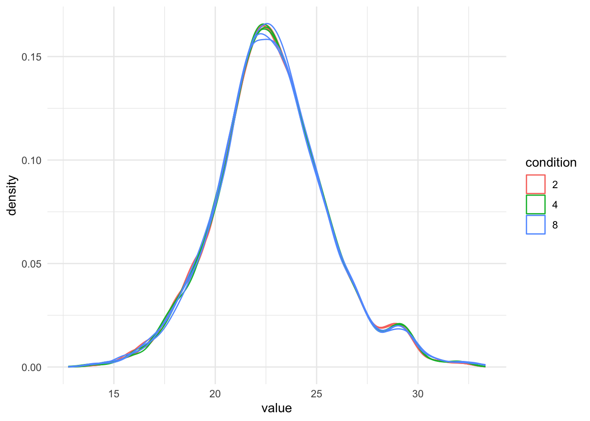
pNormProt2
6 Data Modeling and Inference
Setup model and contrasts of interest.
model <- ~ condition
vd <- ExploreModelMatrix::VisualizeDesign(
sampleData = colData(qf),
designFormula = model,
textSizeFitted = 4
)
vd$plotlist[[1]]
(allHypotheses <- createPairwiseContrasts(
model, colData(qf), "condition"
)
)[1] "condition4 = 0" "condition8 = 0"
[3] "condition8 - condition4 = 0"(L <- makeContrast(
allHypotheses,
parameterNames = colnames(vd$designmatrix)
)) condition4 condition8 condition8 - condition4
(Intercept) 0 0 0
condition4 1 0 -1
condition8 0 1 1Fit models and do inference for all methods and quantities (“Protein.Quantified”, “Protein.Normalised”, “PG.MaxLFQ”).
Click to see code
for (i in proteins_sets)
qf <- msqrob(
qf,
i = i,
formula = model,
robust = TRUE) |>
hypothesisTest(i = i, contrast = L)
qf_pg <- msqrob(
qf_pg,
i = "proteins_log",
formula = model,
robust = TRUE) |>
hypothesisTest(i = "proteins_log", contrast = L)We extract all results tables
inferences <- lapply(proteins_sets, function(i) {
msqrobCollect(qf[[i]], L) |>
mutate(species = rep(rowData(qf[[i]])$species, ncol(L)),
method = i |> gsub(pattern="proteins_",replacement =""),
norm = strsplit(method, split = "_") |>
sapply(`[`, 1),
sum = strsplit(method, split = "_") |>
sapply(`[`, 2))
}
)
inferences_pg <-
msqrobCollect(qf_pg[["proteins_log"]], L) |>
mutate(species = rep(rowData(qf_pg[["proteins_log"]])$species, ncol(L)),
method = "diann_diann",
norm = strsplit(method, split = "_") |>
sapply(`[`, 1),
sum = strsplit(method, split = "_") |>
sapply(`[`, 2))
inferences <- rbind(
do.call(rbind, inferences),
inferences_pg)7 Assess performance
Note, that the evaluations in this section are typically not possible on real experimental data. Indeed, we are using a spike-in dataset so we know the ground truth: all human UPS proteins are differentially abundant (DA) between the conditions and the yeast proteins are non-DA.
We use a nominal FDR level of 0.05
alpha <- 0.057.1 Real Fold changes
As this is a spike-in study with known ground truth, we can also plot the log2 fold change distributions against the expected values, in this case 0 for the yeast proteins and the difference of the log concentration for the spiked-in UPS standards. We first create a small table with the real values.
As this is a spike-in study with known ground truth, we can also plot the log2 fold change distributions against the expected values, in this case 0 for the yeast proteins and the difference of the log concentration for the spiked-in UPS standards. We first create a small table with the real values.
Click to see code
- We extract the levels from factor condition
- We convert then into a number as they refer to the real ratio
- We log2-transform them
- We calculate all pairwise differences between log2 transformed ratio’s to obtain the log2 fold changes
We use a similar operation to construct the name of the corresponding contrast.
(realLogFC <- data.frame(
logFC = colData(qf)$condition |>
levels() |> # 1.
as.double() |> # 2.
log2() |> # 3.
combn(m=2, FUN = diff), #4.
contrast = colData(qf)$condition |>
levels() |>
combn(m=2, FUN= function(x) paste0(x[2]," - ",x[1])) |>
recode("4 - 2" = "condition4",
"8 - 2" = "condition8",
"8 - 4" = "condition8 - condition4")
)
) logFC contrast
1 1 condition4
2 2 condition8
3 1 condition8 - condition4Click to see code
7.2 True and false positives
All human UPS proteins are differentially abundant (DA) between the conditions and the yeast proteins are non-DA. We make a new variable spikein in the inference_list.
Click to see code
tpFpTable <- group_by(inferences, norm, sum, contrast) |>
filter(adjPval < alpha) |>
summarise("TP" = sum(species == "ups"),
"FP" = sum(species != "ups"),
"FDP" = mean(species != "ups")) # colors <- c(
# maxLFQ = "#fcba03",
# medpol = "#c29310",
# median = "#423512"
# )
pTpFpBar <- tpFpTable |> pivot_longer(
cols = c("TP", "FP"),
names_to = "metric", values_to = "count") |>
ggplot() +
aes(
x = norm, y = count,
fill = sum
) +
geom_bar(
stat = "identity", position = position_dodge(preserve = "single"),
color = "black"
) +
facet_grid(contrast ~ metric, scales = "free") +
theme_minimal() +
# scale_fill_manual(values = colors, breaks = names(colors)) +
theme(axis.text.x = element_text(angle = 90, hjust = 1))pTpFpBar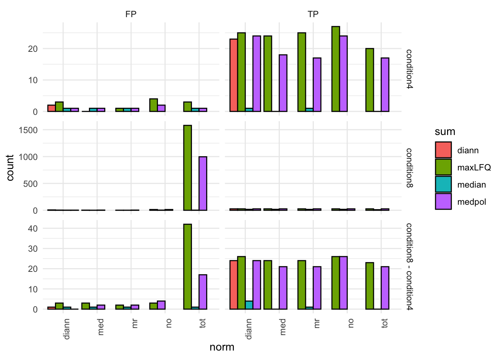
7.3 TPR - FDP curves
We generate the TPR-FDP curves to assess the performance of the different workflows to prioritise differentially abundant proteins. Again, these curves are built using the ground truth information about which proteins are differentially abundant (spiked in) and which proteins are constant across samples.
Click to see code
We create two functions to compute the TPR and the FDP.
computeFDP <- function(pval, tp) {
ord <- order(pval)
fdp <- cumsum(!tp[ord]) / 1:length(tp)
fdp[order(ord)]
}
computeTPR <- function(pval, tp, nTP = NULL) {
if (is.null(nTP)) nTP <- sum(tp)
ord <- order(pval)
tpr <- cumsum(tp[ord]) / nTP
tpr[order(ord)]
}We apply these functions and compute the corresponding metric using the statistical inference results and the ground truth information.
performance <- inferences |> group_by(norm, sum, contrast) |>
na.exclude() |>
mutate(tpr = computeTPR(pval, species == "ups"),
fdp = computeFDP(pval, species == "ups")) |>
arrange(fdp)We also highlight the observed FDP at a \(alpha = 5\%\) FDR threshold.
workPoints <- performance |>
group_by(sum, norm, contrast) |>
filter(adjPval < 0.05) |>
slice_max(pval)pTprFdpPlot1 <- ggplot(performance) +
aes(
y = fdp,
x = tpr,
color = norm
) +
geom_line() +
geom_point(data = workPoints, size = 3) +
geom_hline(yintercept = 0.05, linetype = 2) +
facet_grid(sum ~ contrast) +
coord_flip(ylim = c(0, 0.2)) +
theme_minimal()pTprFdpPlot2 <-ggplot(performance) +
aes(
y = fdp,
x = tpr,
color = sum
) +
geom_line() +
geom_point(data = workPoints, size = 3) +
geom_hline(yintercept = 0.05, linetype = 2) +
facet_grid(norm ~ contrast) +
coord_flip(ylim = c(0, 0.2)) +
theme_minimal()pTprFdpPlot1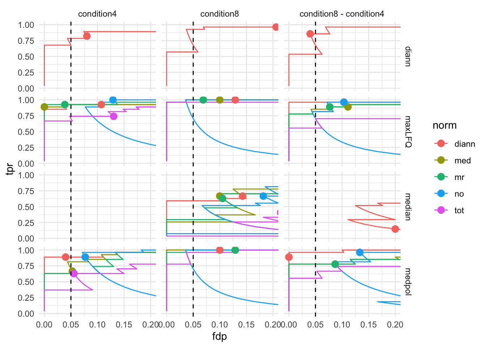
pTprFdpPlot2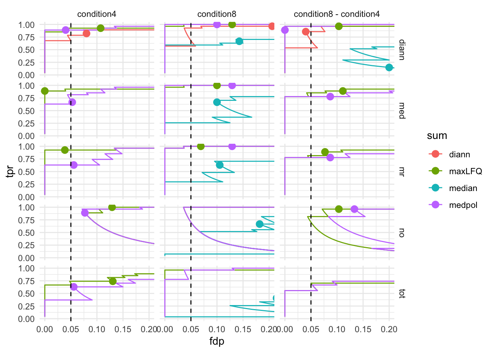
7.4 volcano-plots
We make a separate plot per contrast and compare the volcano plots for all normalisation x summarisation combinations.
Click to see code
pVolcanoPlotsComp <- lapply(unique(inferences$contrast), function(i)
{
print(
inferences |>
filter(contrast == i) |>
plotVolcano() +
facet_grid(sum~norm) +
aes(color = species, shape = adjPval < alpha) +
scale_color_manual(
values = c("grey20", "firebrick"),
name = "species",
labels = c("yeast", "ups")
) +
labs(shape="FDR < 0.05", subtitle = i) +
geom_vline(aes(xintercept = logFC), data = realLogFC |> filter(contrast == i), col ="firebrick") +
geom_hline(aes(yintercept = -log10(adjAlpha)), data = inferences |>
filter(contrast == i) |>
group_by(sum,norm) |>
summarize(adjAlpha = alpha *mean(adjPval < alpha, na.rm=TRUE), .groups="drop"))
)
})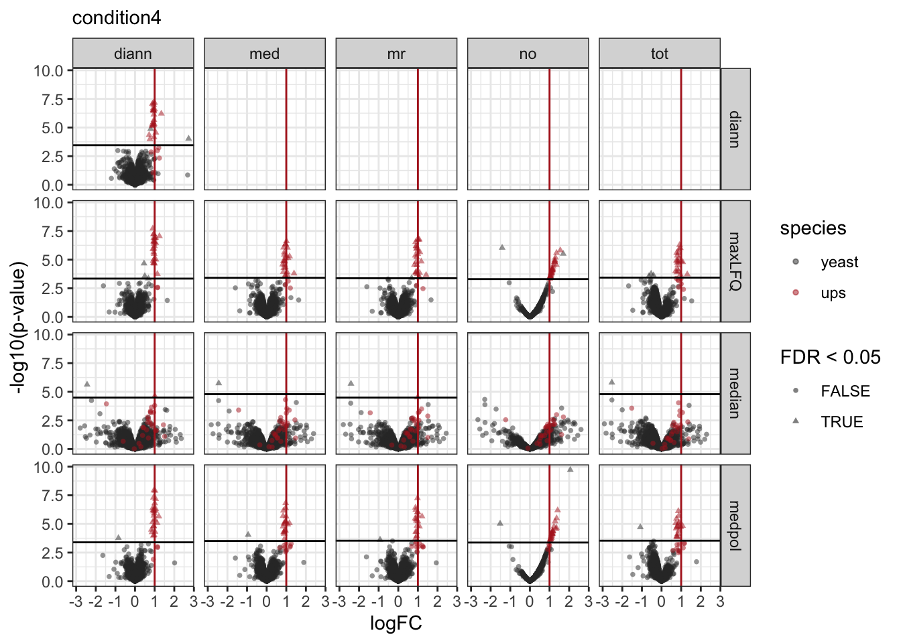
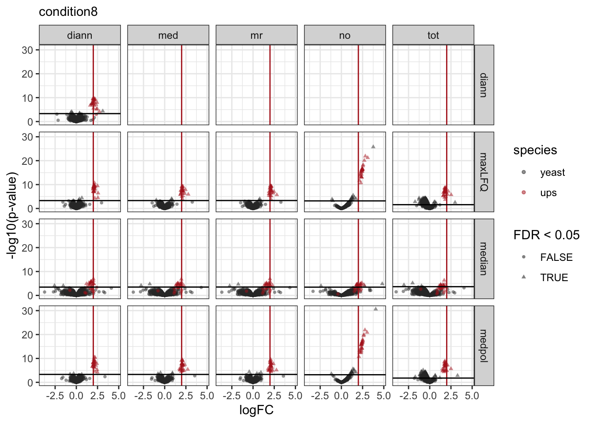

pVolcanoPlotsComp[[1]]
[[2]]
[[3]]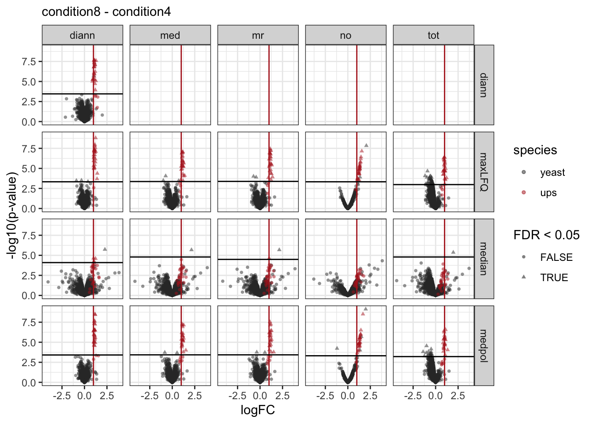
8 Discussion
8.1 Normalisation
- Median normalisation works reasonable if there are not too many missing values and if there are no large imbalances in DA, cfr spikein study which puts burden on normalisation by design.
- Total loading normalisation tends to over correct. It is very sensitive to highly abundant proteins.
- If retention times are comparable, additional retention time normalisation seems to work well.
8.2 Summarisation
Click to see code
protName <- "UPS|P01008ups|ANT3_HUMAN_UPS"
p1 <- qf[,,"precursors_norm_med"] |>
longForm(colvars = colnames(colData(qf)), rowvars = "Protein.Ids") |>
data.frame() |>
filter(Protein.Ids == protName) |>
ggplot() +
aes(x = rowname,
y = value,
group = colname) +
geom_line(linewidth = 0.1) +
geom_point(aes(fill = condition), size = 3, shape = 21) +
theme(axis.text.x = element_text(angle = 90, hjust = 1, vjus = 0.5),
legend.position = "top") +
labs(
x = "Peptide",
y = "log2(norm Intensity)") +
theme_minimal() +
theme(axis.text.x = element_text(angle = 90, vjust = 0.5, hjust = 1))p_median <- p1 +
geom_hline(aes(yintercept= value, col = condition), data = qf[,,"proteins_med_median"] |>
longForm(colvars = colnames(colData(qf)), rowvars = "Protein.Ids") |>
data.frame() |>
filter(Protein.Ids == protName)) + labs(subtitle = "median")
p_medpolish <- p1 +
geom_hline(aes(yintercept= value, col = condition), data = qf[,,"proteins_med_medpol"] |>
longForm(colvars = colnames(colData(qf)), rowvars = "Protein.Ids") |>
data.frame() |>
filter(Protein.Ids == protName)) + labs(subtitle = "median polish")
p_maxLFQ <- p1 +
geom_hline(aes(yintercept= value, col = condition), data = qf[,,"proteins_med_maxLFQ"] |>
longForm(colvars = colnames(colData(qf)), rowvars = "Protein.Ids") |>
data.frame() |>
filter(Protein.Ids == protName)) + labs(subtitle = "maxLFQ")p1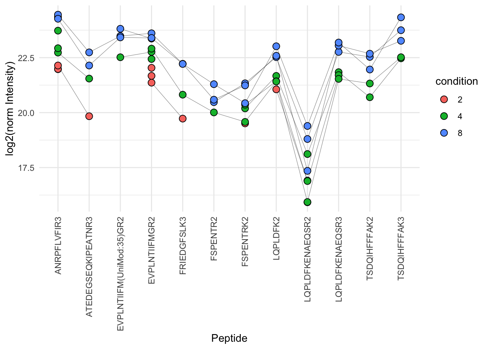
ggpubr::ggarrange(p_median, p_medpolish, p_maxLFQ, nrow=1, common.legend = TRUE, legend="bottom")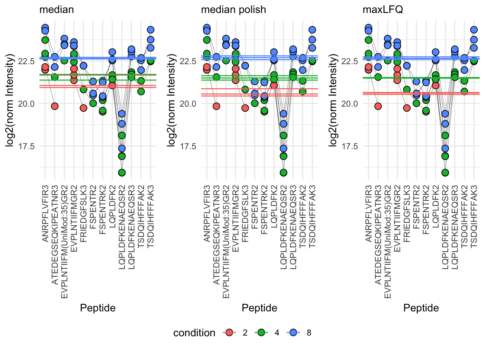
References
Staes, An, Teresa Mendes Maia, Sara Dufour, et al. 2024. “Benefit of in Silico Predicted Spectral Libraries in Data‑independent Acquisition Data Analysis Workflows.” Journal of Proteome Research 23 (6): 2078–89. https://doi.org/10.1021/acs.jproteome.4c00048.